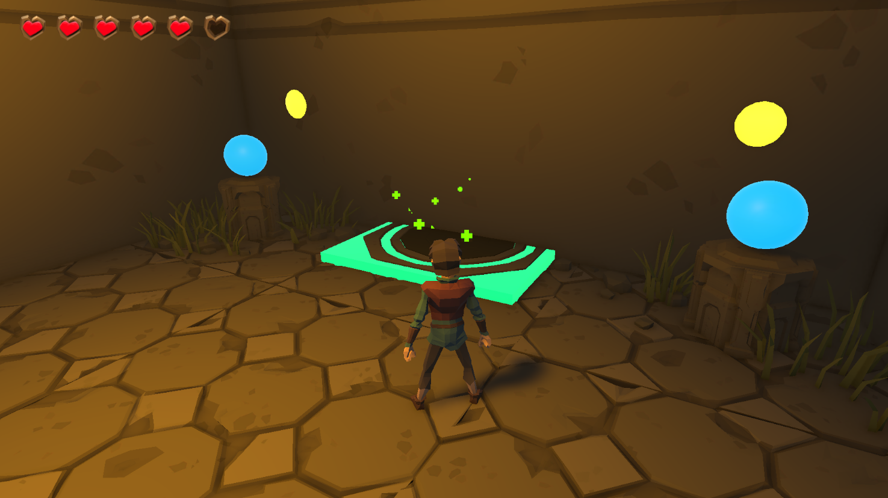
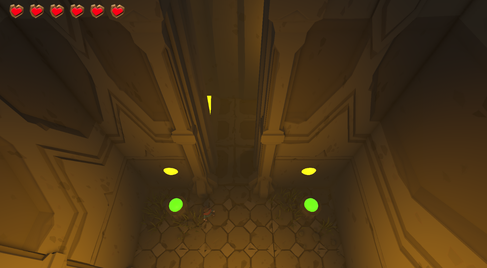
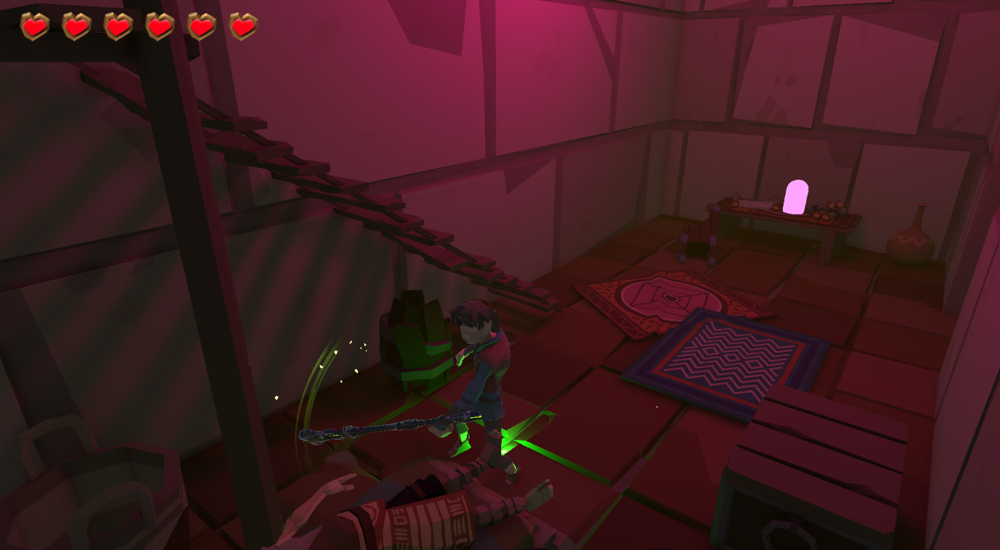
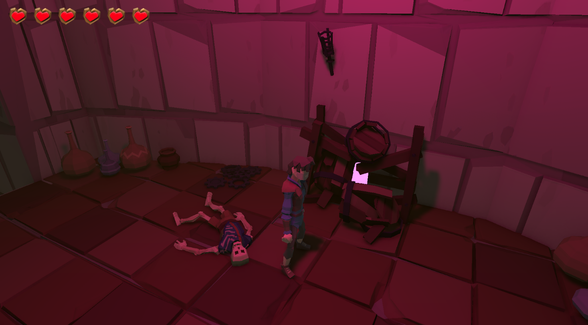
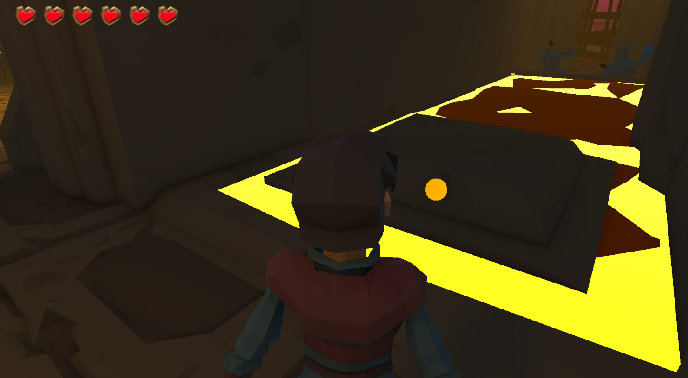

A single-player exploration RPG about uncovering the cause and cure of a dying world.
You awaken in a forgotten underground temple with no memory of how you arrived. As you explore interconnected chambers carved in stone, you uncover fragments of a dying world and the truth behind its decay.





Developed by: Ana Moncada, Mateo Acosa y Dante Cuervo
Institution: Universidad EAFIT
Course: Game Development
Year: 2026